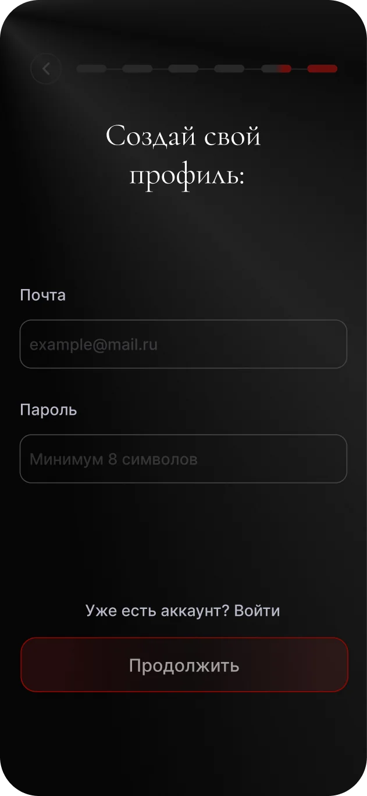
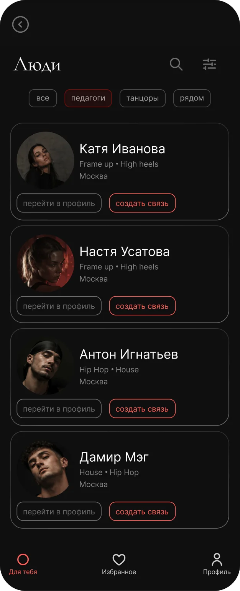

Кейс за 30 секунд
Одно приложение вместо чатов, афиш и соцсетей студий
Занятия, события и люди разбросаны по чатам и соцсетям — танцорам сложно найти своё, а знакомства теряются
Продуктовый дизайнер на всём цикле: проблема и гипотезы, метафора и айдентика, UX/UI, тестирование
Персональная лента занятий, событий и людей и «Ваша нить» — история общих встреч с теми, с кем вы на связи
10 педагогов прошли ключевые сценарии кабинета. Единственное узкое место — кнопка «Опубликовать» — исправлено
(A) Контекст и аудитория
Проект вырос из моего опыта в танцах
Занятия ищешь в чатах, о событиях узнаёшь из соцсетей студий, а знакомства с мастер-классов теряются. Я много раз обсуждала это с другими танцорами в раздевалках и на занятиях — и раз за разом слышала одно и то же. Это стало отправной точкой проекта
Две роли — их выбирают в начале онбординга и могут совмещать
Танцоры
- Что хотят
- Находить занятия и события под свой стиль и уровень, знакомиться и расти внутри сообщества
- Боль
- Информация разбросана, а о педагоге почти ничего не понятно до первого занятия
Педагоги
- Что хотят
- Набирать учеников, публиковать занятия и рассказывать о себе
- Боль
- Расписание и анонсы приходится вести сразу в нескольких местах
(A) Гипотезы и метрики
Что должно сработать и как я пойму, что сработало
Главная ценность Looma — человек находит занятие и приходит на него. Связи и нить растут из этих встреч
Ценность до регистрации
Если сначала показать, что даёт Looma, и собрать интересы, а форму регистрации дать последней, больше новичков дойдут до первой записи
Всё в одном месте
Если собрать занятия, события и людей в одной ленте, танцорам не придётся искать по чатам и соцсетям
Связь удерживает
Если после общей встречи предложить связь и показать «Вашу нить», люди будут возвращаться в приложение
Сфокусировалась на главном пути: найти занятие, прийти и познакомиться
- Онбординг с выбором ролиБез него не собрать персональную подборку
- Лента «Для тебя»Главная точка входа: занятия, события и люди
- Запись на занятиеКлючевое действие и главная метрика
- Связи и «Ваша нить»Отличает Looma от расписаний и афиш
- Кабинет педагогаБез педагогов нет занятий в ленте
Остальное — в следующие версии
- Чат между пользователямиСначала проверить, нужны ли связи вообще
- Оплата внутри приложенияСложно и дорого; на старте — переход к студии
- Отзывы и рейтинги педагоговНужна база занятий, чтобы было что оценивать
- Уведомления о пересеченияхДобавлю, когда связи начнут расти
(B) Метафора и бренд
Нить, которая связывает людей

Красная нить — метафора связи между людьми
Нить проходит сквозь буквы и связывает их в одно слово. Иконка — простая петля из той же красной нити: связь, которая возникает между людьми и продолжает соединять их истории
(C) Проектирование
Сначала подборка, потом регистрация
Главная метрика — записи, а новичков легче всего потерять на форме регистрации. Поэтому онбординг сначала показывает ценность и собирает интересы, а форма идёт последней



Минус в том, что кто-то уйдёт, так и не оставив контакт. Проверить решение хочу A/B-тестом: подборка до регистрации против регистрации сразу
Ключевые экраны




(D) Тестирование
Юзабилити-тест кабинета педагога
Гипотеза: педагог без подсказок справится с ключевыми задачами кабинета — создаст, опубликует, найдёт и отменит занятие
Качественное тестирование
Гипотеза подтвердилась. Одно узкое место — кнопка «Опубликовать»
«Опубликовать» была красной ссылкой в шапке формы — было не сразу понятно, куда нажать
Действие перенесено вниз и стало главной кнопкой экрана
(D) Итоги
Что дал проект и что я проверю дальше
- Метафора нити собрала продукт, айдентику и интерфейс вокруг одной идеи
- Тест показал, что сценарии педагога понятны
- Главная находка — кнопку «Опубликовать» замечали не сразу. Я сделала её заметнее
- A/B-тест: подборка до регистрации против регистрации сразуМетрика — доля дошедших до первой записи
- Протестировать путь танцораПоиск занятия, запись и установление связи
- Следить за долей принятых запросов на связьТак проверяется гипотеза «Связь удерживает»
Живой прототип
Попробуйте Looma
Онбординг, запись на занятие, связь с человеком и кабинет педагога — всё кликабельно
- Продуктовый дизайнер
- Екатерина Богданова
- Роль в проекте
- Соло: исследование, продукт, UX/UI, айдентика, тест
- Срок и программы
- 2 месяца · Figma, Photoshop
- Связаться
- @ekateribog_dana ↗